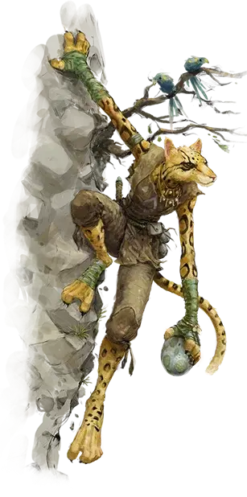

Табакси
Tabaxi

Созданные Кошачьим Богом — божественным существом Внешних Планов — сочетающие качества гуманоидов и кошек, табакси - многообразный народ как по поведению, так и по внешнему виду. В некоторых землях табакси живут как кошки, на которых они похожи, от природы любопытные и чувствующие себя как дома в игривой атмосфере. В иных местах табакси живут так же, как и другие люди, не проявляя кошачьего поведения, которого хотел Кошачий Бог.
Внешность табакси так же разнообразна, как и их поведение. У некоторых табакси есть черты или узоры в их мехе, как у тигров, ягуаров или других больших кошек, в то время как иные больше похожи на домашних кошек. Третьи имеют уникальные узоры или могут стилизовать свой мех в соответствии со своими предпочтениями — или могут быть даже безволосыми!
ОСОБЕННОСТИ Табакси
Вы обладаете следующими особенностями.
Увеличение характеристик. Либо значение одной характеристики по вашему выбору увеличивается на 2, а другой — на 1, либо значение трёх различных характеристик по вашему выбору увеличивается на 1.
Скорость. Ваша базовая скорость ходьбы — 30 футов и вы обладаете скоростью лазанья, равной вашей скорости ходьбы.
Вид существа. Вы — Гуманоид.
Размер. Ваш размер — Маленький или Средний. Вы выбираете его при создании персонажа.
Тёмное зрение. На расстоянии в 60 футов вы при тусклом освещении можете видеть так, как будто это яркое освещение, и в темноте так, как будто это тусклое освещение. В темноте вы не можете различать цвета, только оттенки серого.
Кошачьи когти. Вы можете использовать ваши когти для совершения безоружных ударов. Когда вы попадаете атакой ими, удар наносит 1к6 + ваш модификатор Силы рубящего урона, вместо дробящего урона, свойственного безоружным ударам.
Кошачьи способности. Вы получаете владение навыками Восприятие и Скрытность.
Кошачье проворство. Ваши рефлексы и проворство позволяют вам двигаться с невероятной скоростью. Когда вы двигаетесь в свой ход в бою, вы можете удвоить свою скорость до конца хода. Использовав эту особенность, вы не можете использовать её снова, до тех пор пока вы не переместитесь на 0 футов в один из ваших ходов.
Языки. Ваш персонаж может говорить, читать и писать на Общем и еще одном языке, который по вашему мнению подходит для персонажа.